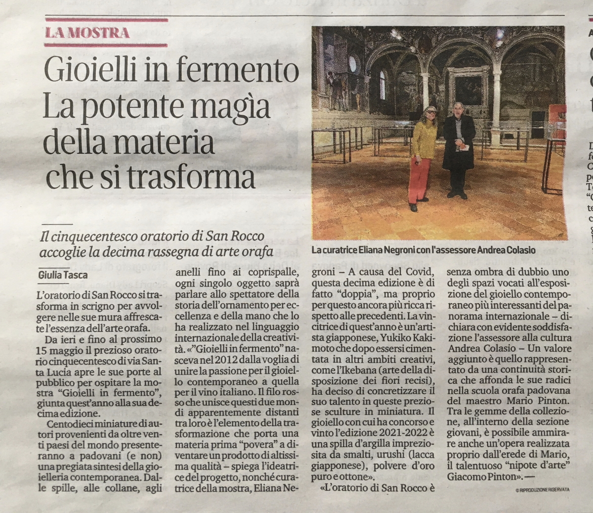
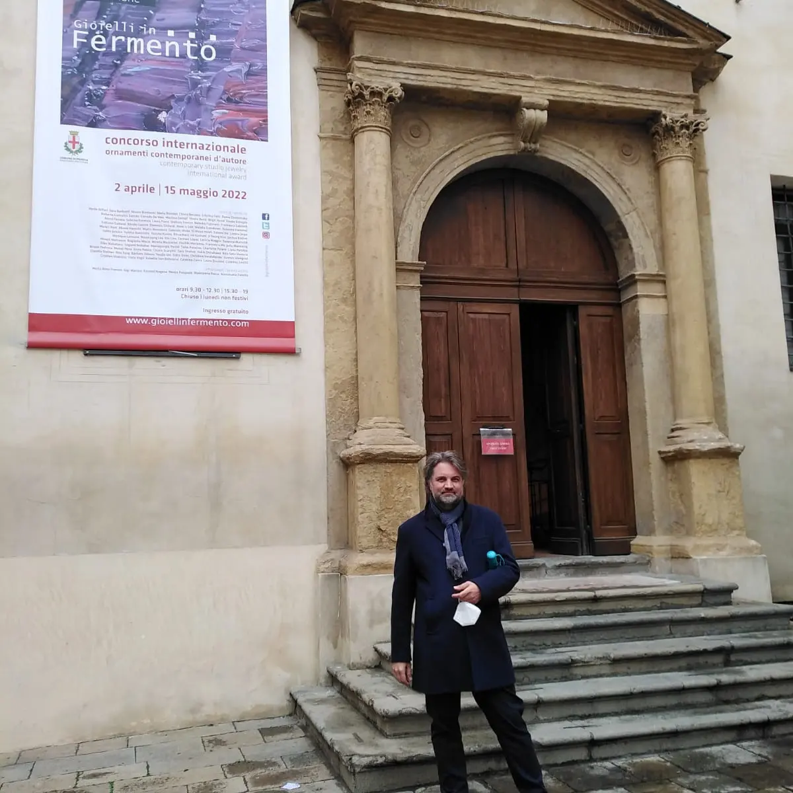
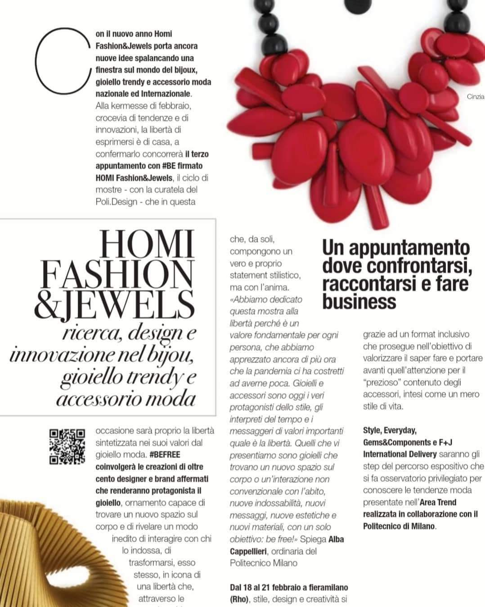

GIOIELLI IN FERMENTO - ARTE E VINO
exhibition | Sala Assemblea Legislativa della Regione Emilia Romagna - Bologna | 2022, October, 6th - 28th
This international exhibition, organised by Regione Emilia-Romagna in collaboration with
AGC - Associazione Gioiello Contemporaneo and curated by Eliana Negroni, was accompanied by a catalogue printed specifically for this event.
The brooch Linee d’Oriente by Stefano Fronza is among the pieces that got selected on the occasion.
press report
GIOIELLOINARTE 2022 | Raffaello - Il Rinnovamento nel linguaggio orafo contemporaneo
exhibition and printed catalogue | Università del Nobil Collegio degli orafi - Roma (I) | 2022, June, 16th - 25th
The 3rd edition of "Gioielli in arte" had to be postponed due to the world pandemic and could eventually take place during 2022.
This special edition was focused on “Raffaello”, a theme that Stefano Fronza interpreted by means of his
Chiavi a Corona, a work admitted to the contest and then selected. This work was exhibited at
Università del Nobil Collegio degli orafi a Roma.
The exhibition was accompanied by a wonderful printed catalogue curated by
Silvia Valletta and edited by Gangemi Editore in Rome.
AGCPUNTO2022
exhibition | Museo di Storia Naturale e del Mediterraneo - Livorno | 2022, June, 4th - 12th
After some years off, in 2022 the annual event dedicated to the members of
AGC Associazione Gioiello Contemporaneo could be organised again and this time the format was an exhibition entitled
AGCpunto22
twhich took place in the temporary exhibitions section of
Museo di Storia Naturale del Mediterraneo in Livorno. The museum was home to works representative of creators, designers and contemporary jewellery artists who, as members of the association, carry out their own research and, thereby, contribute to identifying the contemporary vision of jewels, conceived either as a single pierce or as multiple pieces in a limited series and, in most cases, made by themselves.
Stefano Fronza took part in the exhibition with three of his pins.
MESDAMES - Ritratti femminili e dettagli contemporanei
exhibition | Salone Teresiano, Biblioteca Universitaria - Pavia | 2022, May, 5th - July, 9th
On the occasion of the bicentenary of Napoleone Bonaparte’s death (1821-2021), the collaboration between Eliana Negroni (curator), Antonella Campagna, Francesca Mo (exhibition set-up) and
AGC Associazione Gioiello Contemporaneo gave birth to "MESDAMES - Ritratti femminili e
dettagli contemporanei nelle stampe d’epoca napoleonica", an exhibition that took place at Biblioteca Universitaria in Pavia.
The scenic
Salone Teresiano, a hall situated inside one of the oldest public state libraries, was home to this exhibition of jewels created by some selected contemporary artists, among whom
Stefano Fronza with his work Napoleone.
more details
GIOIELLI IN FERMENTO 2020|21 X ed.
exhibition and printed catalogue | Oratorio di San Rocco, Musei Civici - Padova | 2022, April, 2nd - May, 15th
Padua and the ever charming setting of Oratorio di San Rocco - nowadays an important and well-established location for contemporary jewelry exhibitions - hosted
Gioielli in Fermento X ed., an event that actually encompassed the two editions of the pandemic
initial biennium. Artists, enthusiasts, collectors, curators and gallery owners could eventually enjoy meeting each other face-to-face.
Stefano Fronza attended the inauguration and had the chance to exhibit two of his works: the necklace
Collegamento Ipertestuale and the brooch
Linee d’Oriente.
press release


KLIMT02 | international platform devoted to contemporary jewelry
publication of profile and interview | Barcellona (Spain) | 2022
In 2022 Stefano Fronza becomes member of Klimt02, an international online platform devoted to contemporary jewelry on which a
profile of the artist and an interview with him can be found.
#BEFREE - Freedom in fashion jewellery and accessories
exhibition | Fiera di Milano - Rho (Milano) | 2022, March, 11th-15th
In the wake of the enhancement of the artistic and cultural heritage enclosed by jewels, a new edition of the cycle of exhibitions hashtag
#BE, has seen the light: in these exhibitions the leading role is played by freedom in the shape of jewels, a freedom investigated by the creations of over 150 designers and established brands.
In March 2022 the brooch Farfalla by Stefano Fronza - selected by
Poli.Design di Milano - was exhibited at Fiera di Milano, in collaboration with
Homi Fashion&Jewels and under the curation of Prof.ssa Alba Cappellieri.

The brooch Farfalla is the one who comes from nature, from a fleeting moment that manifests on a meadow: a butterfly rests on my arm and she gives me a secret.
This idea turns into an object with an abstract, pictorial shape related with action painting.
ARTE Y JOYA | CONTEMPORARY JEWELLERY YEARBOOK 2021/2022
selection, exhibition and publication | Barcellona (Spain) | 2021/2022
This is Stefano Fronza's first ever participation in the Prize Contest that Arte y Joya Yearbook conceived in order to promote creative
jewelry artworks and give visibility to those artists who decide to devote their own work to research. This 11th edition of the Prize Contest
was attended by 168 artists from 45 countries. Stefano Fronza ranked among the top 5 artists and got thereby the chance to take part in the
1st International Meeting of Contemporary Jewelry at Backyard Arte Simancas Gallery of Valladolid in Spain, an event which took place from mid-December 2021
thru January 2022.
Along these years the website arteyjoya has turned into a privileged
space from where the essence of contemporary jewelry can be transferred to any part of the world. After being selected by five international
jewelry experts, 32 artists (including Stefano Fronza) reached the final stage and - here is a novelty of this 11th edition - they were given
the chance to exhibit their artworks in the Galleries Studio Squina in Madrid and 66 Mistral Gallery in Barcellona in the period between November 2021 and February 2022. The artworks that made it to the
final stage are on display also in the paper catalogue and on the magazine Contraste.
Invitation to exhibition at Studio Squina in Madrid (Spain)
Preparing the exhibition at Studio Squina in Madrid (Spain)
Preparing the exhibition at Studio Squina in Madrid (Spain)
Preparing the exhibition at Studio Squina in Madrid (Spain)
Invitation to exhibition at Backyard Arte Gallery in Valladolid (Spain)
Invitation to exhibition at Backyard Arte Gallery in Valladolid (Spain)
The 5 artists selected at 1st "Gioiello d'Autore" International Meeting
Invitation to exhibition at 66 Mistral Gallery in Barcellona
Invitation to exhibition at 66 Mistral Gallery in Barcellona